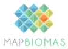

Minicurso QGIS
Prof. Marcos Vinícius Cândido Henriques, UFERS Campus Angicos
Links para os dados utilizados nas atividades do curso.
Material do curso
Dados geográficos
- Malhas do Rio Grande do Norte — IBGE
- Áreas Urbanizadas — IBGE
- Rodovias Federais — BIT Mapas
- SIGEL — dados geográficos do setor elétrico (ANEEL)
- Webmap da EPE — Empresa de Pesquisa Energética
- SIGMINE — processos minerários (ANM) — em Download, escolha SHP para Rio Grande do Norte
- CAR — Cadastro Ambiental Rural, Consulta Pública — em Base de Downloads, selecione RN e baixe Perímetros dos Imóveis e outras camadas de interesse (acesso atual)

MapBiomas Brasil — cobertura e uso da terra (mapas para download em GeoTIFF)- Brazil Data Cube Explorer (INPE) — imagens MOD13Q1 v061 com NDVI para download em GeoTIFF
- NDVI do Rio Grande do Norte — 2026 (GeoTIFF) (45 MB)
- MapBiomas — tabela de códigos, classes e cores da cobertura 30 m (Coleção 11)
- MapBiomas — legenda para QGIS da cobertura 30 m (Coleção 11, ZIP)
- OpenStreetMap
- Base Hidrográfica ANA
- Massas d'água do Rio Grande do Norte (GeoPackage)
- Dados de vento do Rio Grande do Norte (GeoTIFF):
Velocidade do vento a 100 m · Velocidade do vento a 150 m
Densidade de potência do vento a 100 m · Densidade de potência do vento a 150 m